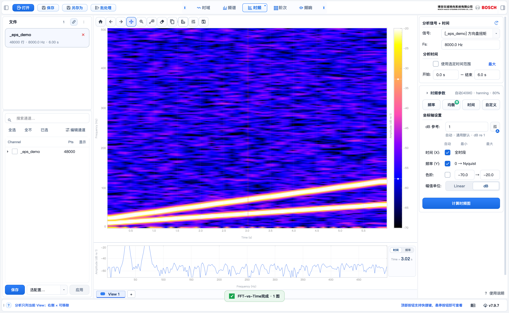

时频图 / FFT vs Time
时频图
看频率随时间怎么变 —— 频率 × 时间的彩色谱图。

顶部 · 切到「FFT vs Time」
右栏上 · 信号 （右栏下拉选）
右栏中 · 时频参数 （NFFT / 窗 / 重叠）
右栏下 · 计算时频图
中间 · 彩图 + colorbar
图下 · 取切片 （时间 / 频率）
左侧列表 不在这选 （同阶次）
右栏选信号，设时频参数
顶部点FFT vs Time。
右栏上部从信号下拉选一个（如方向盘扭矩），确认 Fs。
右栏中部挑预设，或调 NFFT / 窗 / 重叠。
点计算时频图 → 出 频率 × 时间 彩图。
点彩图任意点 → 下方看该处剖面（时间 / 频率 可切换）。
拖右侧 colorbar 调色阶；横亮带＝某频率持续存在。
时频图也能开 A 计权
右侧 频率加权 选 A 计权，整张时频图按人耳听感（IEC 61672）重新加权。
分析录音、噪声升降的声学场景时更直观；打开音视频文件会自动预设成 A。
属相对加权显示，配合右侧显示范围一起调，弱信号也看得清。
同一段录音，开 A 计权后高低频被压、中频突出，更接近「听上去」的样子。
批处理也能导出切片
批处理里选FFT vs Time，右栏打开切片卡：选一个维度——固定时间（看该时刻的频谱）或固定频率（看该频率随时间的走势），一次只切一个维度。
位置中英文逗号均可，最多 4 个，比如 5, 15, 25；多个位置画进同一张切片图叠加对比。
开启后导出图从一行变两行（谱图 + 切片曲线），数据文件也从几十万行的长表变成一张几百行的切片表，Excel 打开秒开。
关闭切片时导出与现状完全一致——不开就不变。
多个时频 View 也能稳妥整理
View 色标关闭：当前 View 悬停色标出现 ×；其他 View 首击只切换，移出再进入后才可关闭。右侧 ⋯ 始终可管理全部 View，窄窗口显示 »N。
Windows/Linux 用 Ctrl+Tab / Ctrl+Shift+Tab 切换；macOS 显示 Meta+Tab（⌃⇥）/ Meta+Shift+Tab（⌃⇧⇥）。图表复位用 Ctrl+R，Esc 只退出最内层菜单或临时编辑。
需要回看原始时域波形时，时域图的游标显示设置可控制极值点和双游标 Min / Max / Avg / 差值；其 mini 读数保留完整提示。